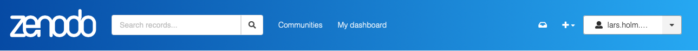
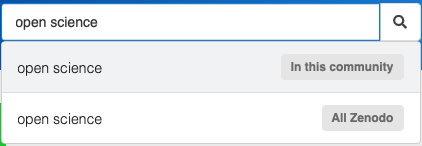
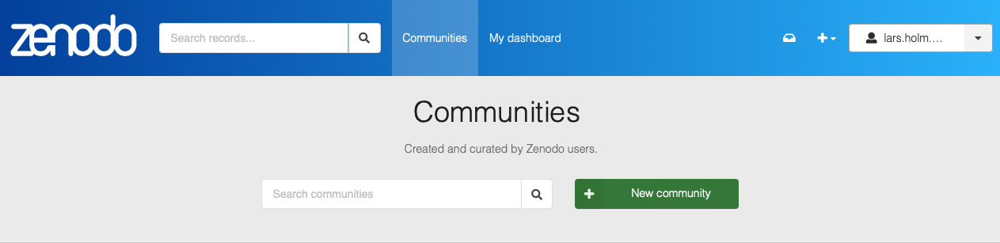
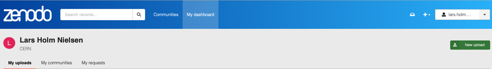
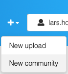
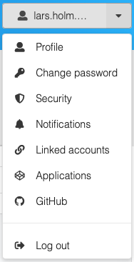
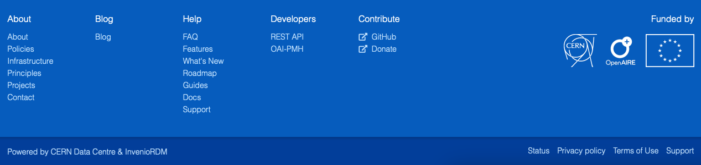

Navigating Zenodo
The following section gives a basic overview how to navigate Zenodo's user interface.

From the header (see screenshot above) you can:
- Search: Search for records in all of Zenodo. The search field is contextualised, so if you're browsing a community you can choose between searching only the community or all of Zenodo.
- Communities: Browse and search for communities in Zenodo. A community is an area of Zenodo managed and curated by other users for e.g. their project, domain, institution or conference.
- My dashboard: The dashboard provides access your content in Zenodo - to your uploads, communities and requests.
- Inbox: The request inbox provides quick access to view your pending requests such as draft reviews, community inclusion, ownerships transfers, file replacements etc.
- Quick actions (+): The plus menu allows you to quickly create new uploads or new communities. The menu is contextualised, so if you're in a community it allows you also invite new members.
- Profile: The profile menu allows you to manage your account and settings on Zenodo such as changing password, linking/unlinking ORCID/GitHub accounts.
Each of these sections are detailed below.
Search
The search field is contextualised, so that if you search while browsing a community, you have the option to search only this community or all of Zenodo. The search field supports simple keyword style searches as well as advanced search (see the advanced search guide).

Communities
The communities section allows you to browse and search for communities created and curated by Zenodo users.

Dashboard
My dashboard allows you to easily access and manage your content in Zenodo via the menus:
- My uploads - all your drafts and published records
- My communities - all your communities that you own or are member of.
- My requests - all open and closed requests such as draft reviews, community inclusion, ownership transfers etc. This include both requests created by you, or sent to you by other users.

Quick actions
The + menu, allows you to easily create new content in Zenodo. It's contextualised so when managing a community your are an owner/manager of you can also invite new members from the menu.

Profile
The profile menu allows you to manage your account and settings:
- Profile: Your full name, affiliations, email address as well as profile/email visibility.
- Change password: Allows you to update your password if you logged in with a local account.
- Notifications: Change if you want to receive notifications from Zenodo or not.
- Security: View all devices logged into your current account.
- Linked accounts: All external accounts linked to Zenodo user (e.g. GitHub, ORCID and/or OpenAIRE).
- Applications: Allows you to create API access tokens and API applications.
- GitHub: Allows you to setup automatic archiving from GitHub.

In the footer you'll find a links to documentation about Zenodo as well as our privacy policy, terms of use and not to mention the link to our support request form.
